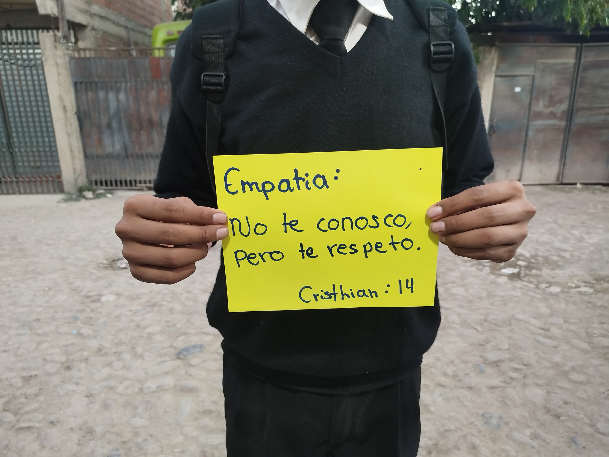
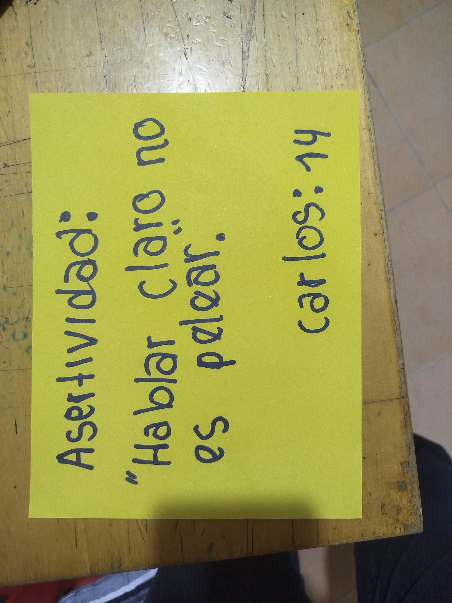
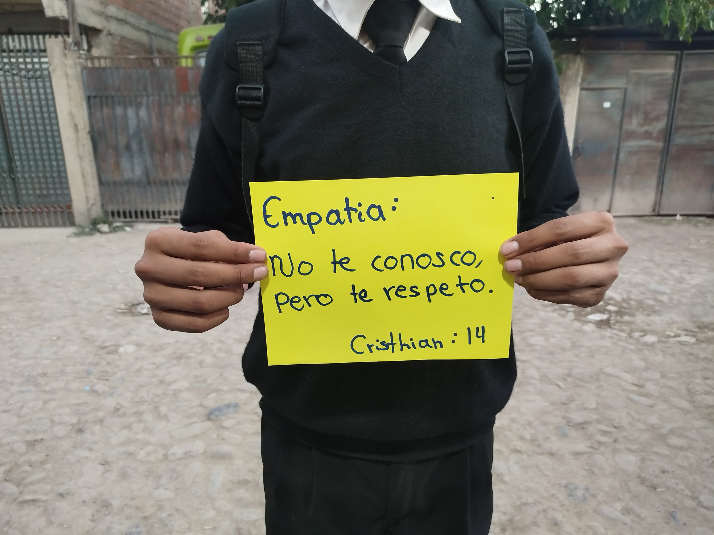
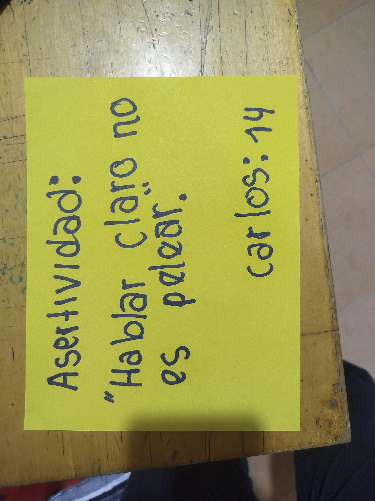
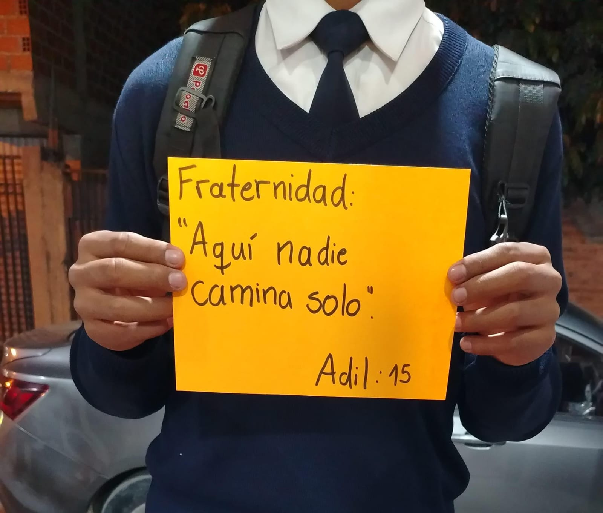
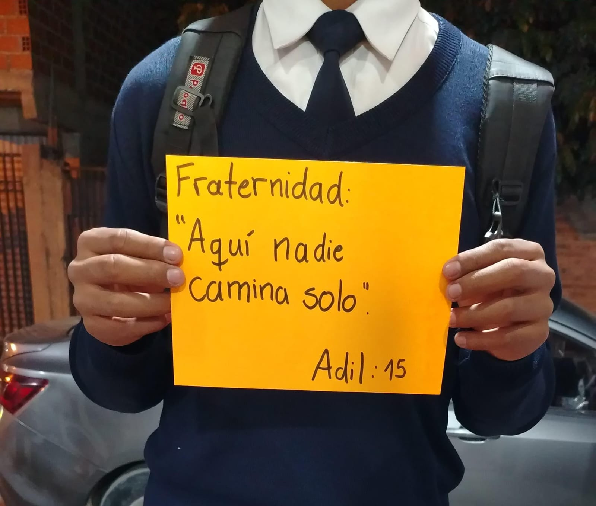

Justificación
En muchas escuelas, hablar de asertividad, empatía o fraternidad es algo poco común. Estos temas no suelen tener un lugar en el programa, y cuando lo tienen, muchas veces se abordan de manera superficial o teórica. Pero los conflictos, las frustraciones, los silencios, los malentendidos... esos sí están todos los días.
Este proyecto nace de una preocupación concreta: ¿qué pasa cuando nadie nos enseña a expresar lo que sentimos? ¿Cómo aprendemos a convivir si nadie nos muestra cómo escuchar al otro sin prejuicio?
Creemos que estos temas no solo deberían enseñarse: deberían vivirse. Por eso diseñamos este espacio como un taller práctico, emocional, humano. Un lugar donde los y las estudiantes puedan experimentar lo que significa decir lo que sienten, defender lo que piensan, escuchar al otro y construir algo juntos.
Frases escritas por los estudiantes
 




 
